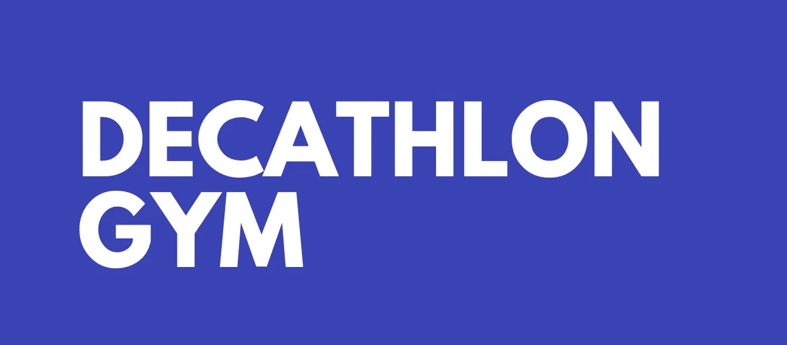
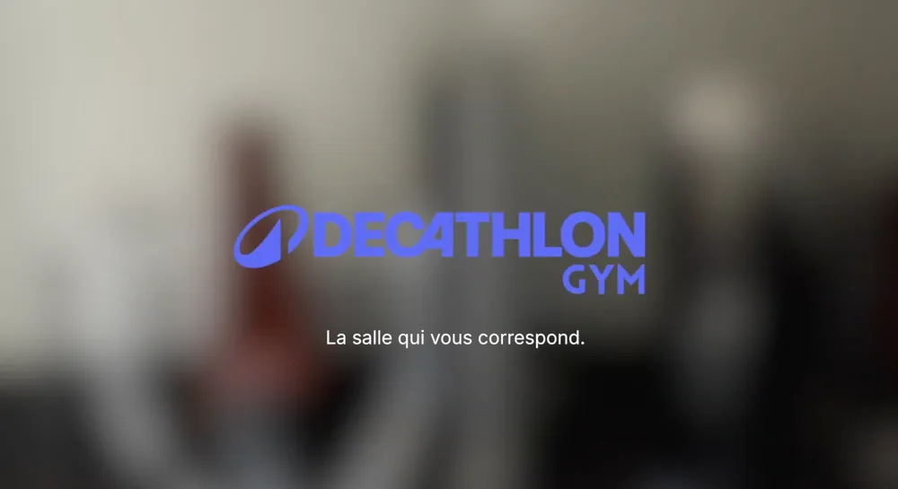
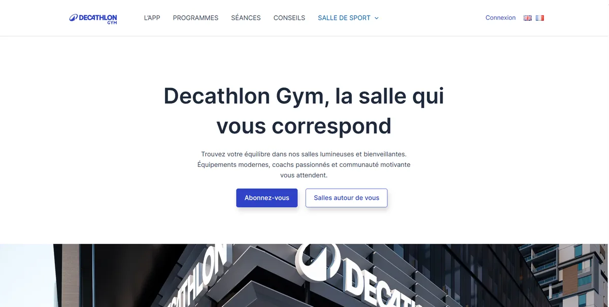
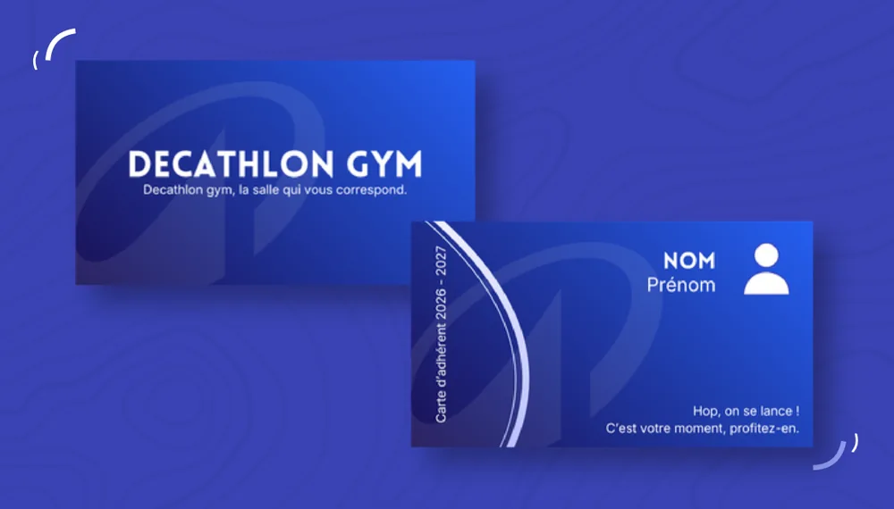

Decathlon Gym
Campagne de lancement d’une salle de sport accessible à tous, imaginée pour Decathlon.
- Période
- 27 avril – 8 juin 2026
- Contexte
- SAÉ 202-1 · BUT MMI 1re année
- Équipe
- 5 étudiants

Le projet
Et si Decathlon ouvrait sa propre salle de sport ? En groupe de cinq, nous avons imaginé Decathlon Gym : une salle pensée pour tous les profils, du débutant au sportif confirmé, équipée du matériel que l’on retrouve en magasin et accessible dès 21,99 € par mois.
Le projet s’est déroulé en deux temps. Nous avons d’abord construit une recommandation stratégique : diagnostic de la marque, analyse de la concurrence, cibles, personas et stratégie de communication. Nous avons ensuite produit la campagne de lancement : carte d’adhérent, affiche, vidéo publicitaire, site vitrine et publications sur les réseaux sociaux.
- 01
Diagnostic
Histoire, identité et concurrents de Decathlon
- 02
Stratégie
Cibles, personas, positionnement et message
- 03
Création
Print, vidéo, site vitrine et réseaux sociaux
- 04
Diffusion
Planification de la campagne de janvier 2027
Ma contribution
J’ai organisé le projet à l’aide d’un planning de Gantt, que nous avons respecté du début à la fin. Les décisions importantes, comme le choix des canaux ou la narration de la vidéo, ont toujours été prises collectivement. En parallèle, j’ai pris en charge plusieurs parties dans chaque domaine :
- Stratégie : analyse de la concurrence à partir des rapports annuels de Decathlon et des données de l’Union Sport & Cycle, puis positionnement de Decathlon Gym. Participation à la segmentation, au SWOT et à la stratégie de communication.
- Audiovisuel : prise de son pendant le tournage, enregistrement des voix off et des bruitages, et composition de la musique originale, avec une montée en énergie qui accompagne le passage de l’extérieur à la salle.
- Web : conception de la page d’accueil du site vitrine, d’un zoning à la main jusqu’à son intégration sur WordPress.
- Réseaux sociaux : rédaction en binôme du post LinkedIn de lancement, au ton B2B.
Les réalisations
- Regarder la vidéo sur YouTube (nouvel onglet)

Vidéo publicitaire
Musique originale, voix off et bruitages réalisés par mes soins.

Site vitrine
Page d’accueil conçue puis intégrée sur WordPress.

Carte d’adhérent
Carte de membre recto verso, réalisée sur Canva.